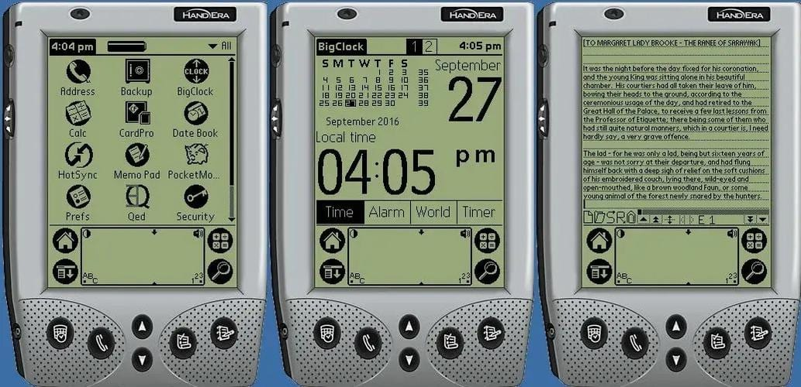

Palm Pilot 1000/5000

1997 年上市的 Palm Pilot 1000/5000，以轻巧机身、单粒电池供电与「够用就好」的 PIM 功能重新定义掌上电脑，Graffiti 手写输入与 HotSync 同步成为行业范本。上市一年余即售出百万台量级，是 PDA 黄金年代的开创者。
客观评测
Palm Pilot 1000/5000 于 1997 年 3 月上市，搭载摩托罗拉 MC68328（约 16MHz），配 160×160 像素单色触控屏与手写笔，运行 Palm OS 1.0，内置通讯录、日程、备忘录等 PIM 应用，支持 Graffiti 手写与 HotSync 底座同步，2 节 AAA 电池供电、约 160 克。首发 299/399 美元，上市一年余销量即达百万台量级。
主观点评
Palm Pilot 是「口袋里的效率」第一次真正成立。Graffiti 手写字母需要一点学习成本，但一旦肌肉记忆形成，记事的速度令人上瘾；晚上把机器往 HotSync 底座一放，啪的一声同步完成，是 90 年代末数字生活的高光仪式。今天的收藏者多把它当作 PDA 黄金年代的开山藏品：机身便宜、成色好的不少，但底座、手写笔齐备的套装才完整。它教会行业一个至今有效的道理：做减法的产品，反而走得最远。
优点与不足
- 轻巧便携、AAA 电池供电数周，随身性极佳
- Graffiti 手写与 HotSync 同步体验流畅，PIM 功能务实好用
- 定价亲民，把 PDA 从小众工具推向大众市场
- 128KB/512KB 内存容量极小，装不了几个应用
- 无无线通信与存储卡扩展，数据交换依赖底座
- 单色屏幕与塑料机身，质感平平
参数规格
| 上市时间 | 1997 年 3 月（美国） |
|---|---|
| 产品类型 | 掌上电脑（PDA） |
| 处理器 | 摩托罗拉 MC68328（Dragonball） |
| 主频 | 约 16MHz |
| 内存 | Pilot 1000 约 128KB；Pilot 5000 约 512KB |
| 屏幕 | 160×160 像素单色触控液晶屏 |
| 触控 | 电阻式触摸屏，标配手写笔 |
| 输入 | Graffiti 手写速记法 + 屏幕键盘 |
| 操作系统 | Palm OS 1.0 |
| 内置应用 | 通讯录、日程、待办、备忘录、计算器、记事本 |
| 同步 | HotSync 底座串口同步（PC/Mac） |
| 接口 | 串口（专用 HotSync 同步底座） |
| 电池 | 2 节 7 号（AAA）电池 |
| 续航 | 数周量级（视使用频率） |
| 尺寸 | 约 12×8×1.8 厘米 |
| 重量 | 约 160 克（含电池） |